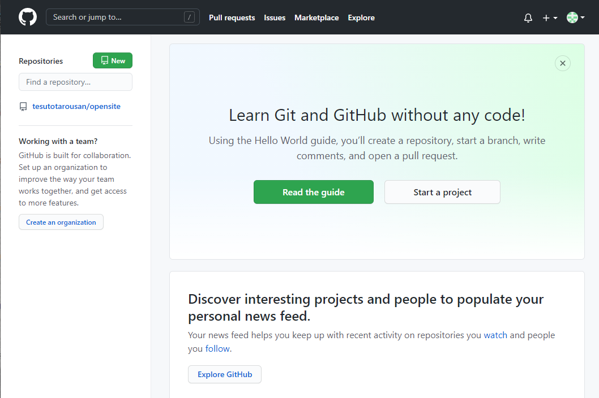
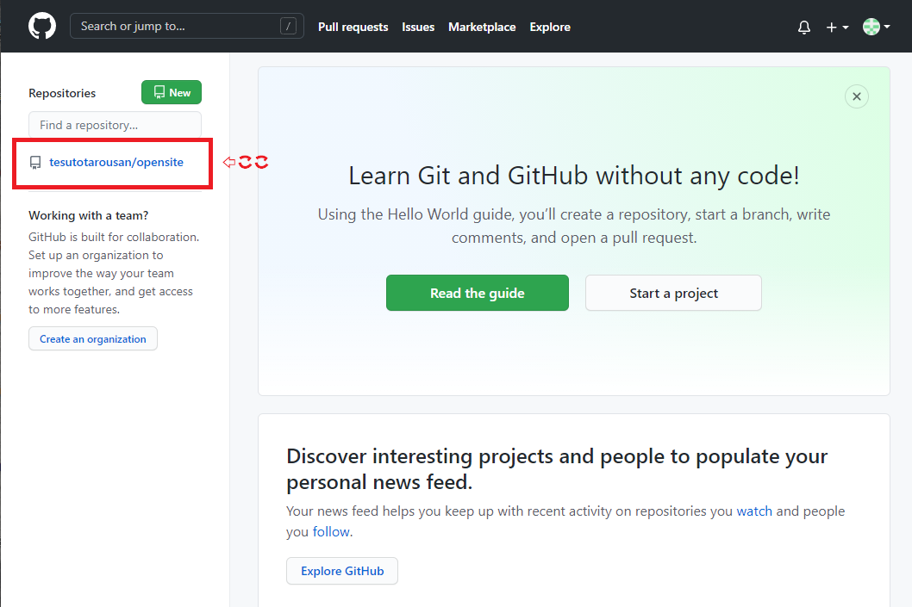
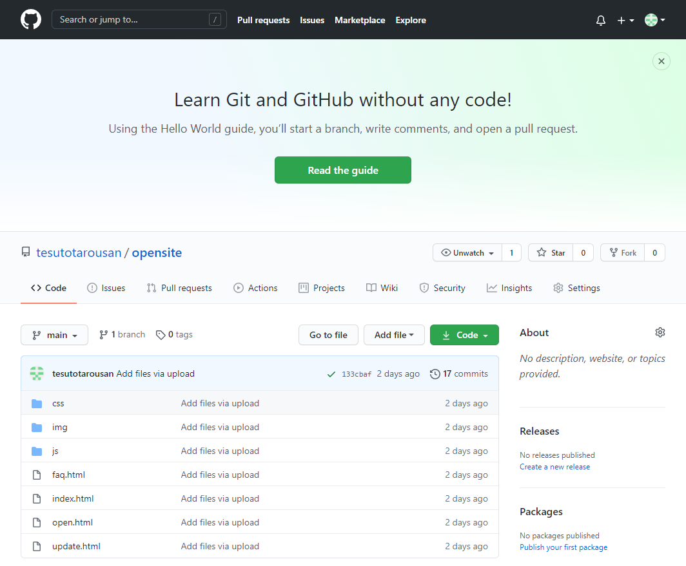
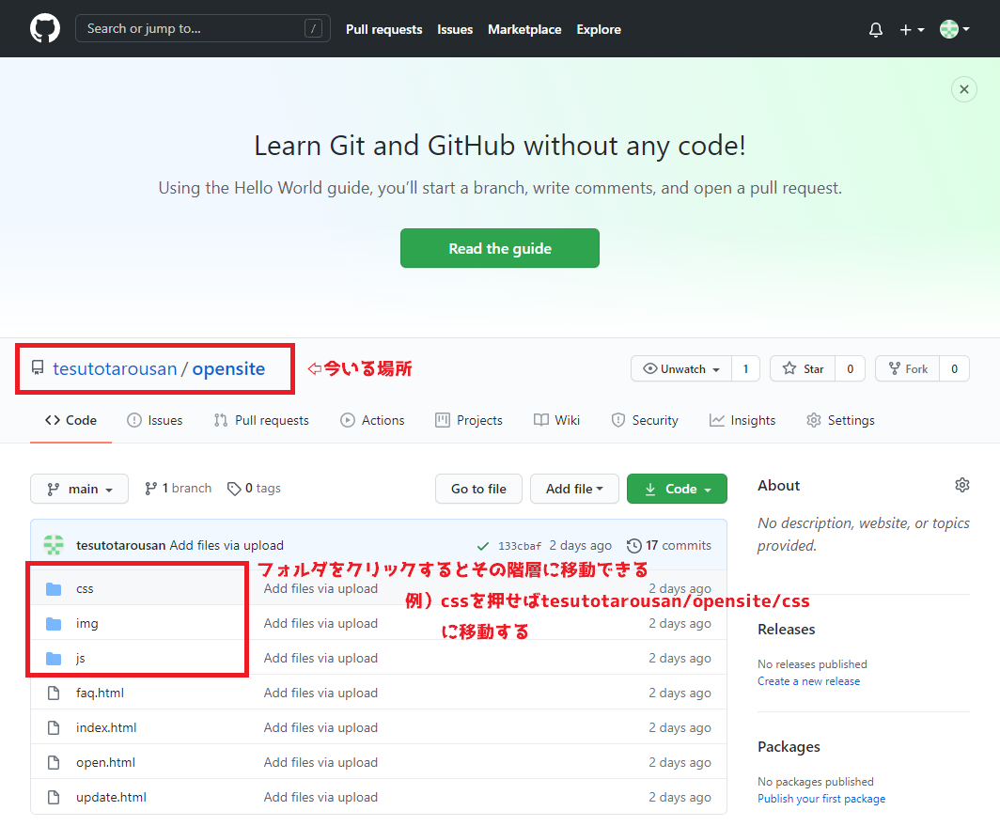
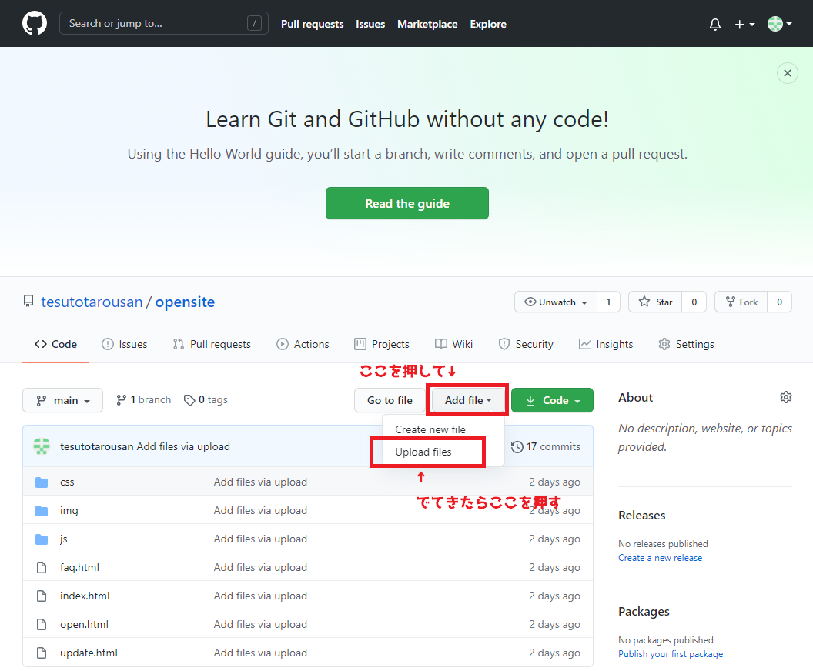

UPDATE's
このページではGitHubというサイトのGitHub pagesというサービスを利用し、無料で静的なサイトを公開……できた後に、公開したページを更新する時の手順を解説する。
※Windows10でやったのでMacだと画面が少し違うかも。だいたい一緒だと思うけど。
更新のやり方
公開時に作成したGitHubのアカウントでログインする
まずはGitHubを使うためにログインする。
下記のリンクかURLからGitHubのトップページを開いてください。
⇒ GitHub
⇒ https://github.co.jp/
※なぜかトップページだけ日本語ページがある。謎。
ページの右上にあるサインインからログイン。
ログインできたら下のようなページになるはず
ページの左上あたりに作成したリポジトリが表示されているので、そこを押す。
下のようなページになるはず。
ここがリポジトリの管理ページなので、サイトの更新でもこの画面から作業していく。
最初は公開リポジトリの直下にいるので、更新したいフォルダの場所に移動する。
例えば、cssフォルダの中のcssファイルを更新するなら、リストの中のcssフォルダをクリックしてフォルダ内に移動する。
更新したい場所に移動したら、「Add file」のボタンを押し、出てきた「Upload files」を押してアップロード画面に移動する。
アップロード画面は公開の手順と同じ。
「Drag files here to add them to your repository」に更新したいファイルを投げ込んで「Commit changes」を押せばアップロードできる。
※追加するファイルの階層がズレないように注意。
例）cssフォルダ内でcssフォルダごとアップロードを行うとcss>css>style.cssのようになってしまい階層がズレる。
アップロードが終わったらサイトを確認してみましょう。
更新されてるハズ！！
※少し時間差がある時があるので、変わらない時は少し時間を置いてみる。
※ブラウザにキャッシュが残って上手く更新されない時もあるので、ブラウザの履歴を消してみる。
※とりあえずローカルで動作確認してからアップしようね。